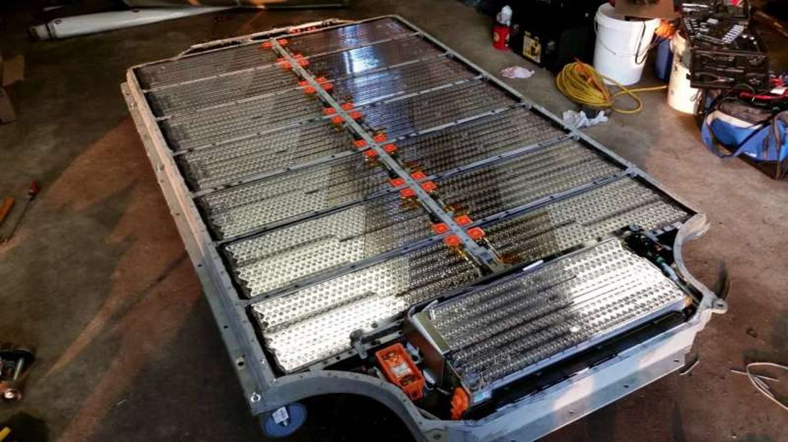
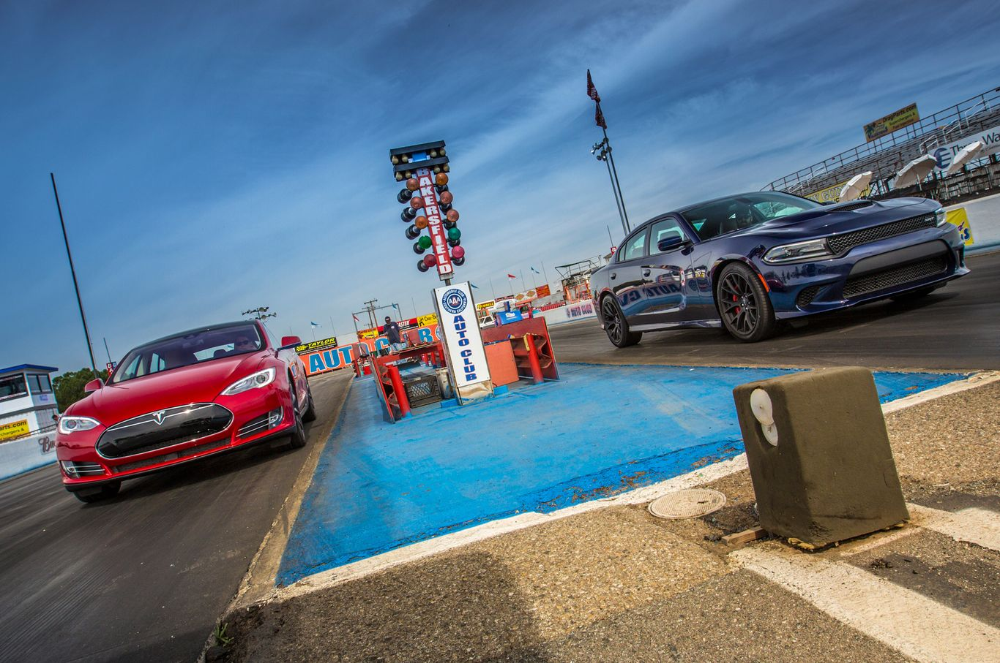
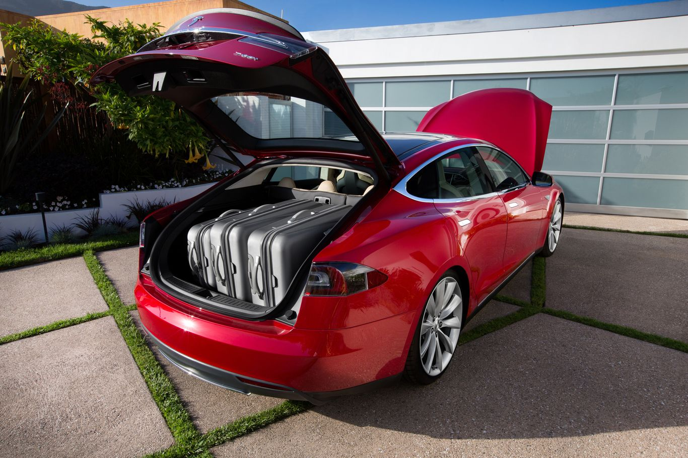

What is Tesla?
Tesla is a US company involved in car manufacturing and energy. Best described as a battery company, Tesla is best known for its electric cars. The company is also known for specialising in solar panels and Lithium-ion battery energy storage. The company first gained attention following the 2008 release of the Tesla Roadster, the very first electric sports car. Following the Roadster was the Model S, a sedan, which has since become the one of the world’s best-selling plug-in electric cars. In fact, as of 2016, the Model S ranks behind the Nissan Leaf as the world’s best-selling plug-in electric car.

Top 3 Advatages of Tesla
1) Battry Range
Electric cars nowadays have a big battery packed in side, some car, model S for example, can travel up to 1610 kilometers ( 1000 miles ) in a single charge. Tesla’s battery is also capable of lasting 8 years and can travel more than 160k miles throughout the battery life span.
2) They are Fast!
Electric cars engine layout is basically one motor for each wheels, which they could perform individually , therefore, a quick acceleration time and high top speed can can be achieved easily, take a Model S for example, in Ludicrous mode, it has beaten an Aventador in the acceleration time.
3) Practicality
Since there’s no engine in the front, all the machines that give a Tesla thrust are placed at 4 wheels, thus giving you more room for grocery, luggage, etc. In fact, you can put 2 to 3 bags of luggage in the trunk, not to mention there’s a front trunk under the hood, which can be used to carry some more extra bags. Even when fully loaded both front and rear, they still run just fine.